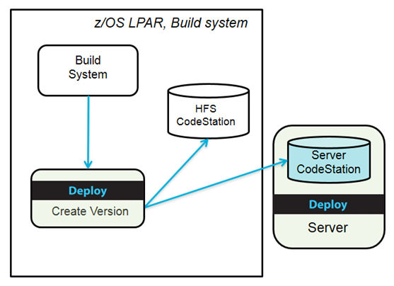

Choosing a CodeStation and planning storage
After installation, you can change the CodeStation where version artifacts are stored. The IBM z/OS agent that is used to import version stores artifact versions when the choice of CodeStation is HFS. Every z/OS agent that is used to deploy projects stores backups of old artifacts so that a rollback can be done when required. Plan the agent directory to ensure there is sufficient space for CodeStation and backup.
Choosing a CodeStation
About this task
Procedure

Planning storage
About this task
The z/OS agent that imports versions stores those artifact versions when the choice of CodeStation is HFS. Every z/OS agent that deploys projects stores backups of old artifacts so you can roll back to a previous version.
Procedure
Plan the agent directory to ensure there is sufficient space for the artifact versions in the
CodeStation and backups. The space requirements vary depending on retention policies, application
types, number of artifacts, and the number of deployments. For typical production environments,
allocate 10 - 20 GB for storing version artifacts and for storing deployment backups. A breakdown
estimation follows:
- Agent installation directory: The agent install directory requires at least 500 MB space.
- HFS CodeStation directory: The default location of the HFS CodeStation is agent install dir/var/repository. Estimate storage requirements by multiplying the average artifact size by the number of versions that are imported per day, and then multiply the preceding result by the average number of days before cleanup. Add 20 percent to account for metadata.
- Deploy backup directory: The location of the deploy backup is agent install dir/var/deploy. Estimate storage requirements by multiplying the average artifact size by the number of deployments that are performed per day, then multiply the preceding result by the average number of days before cleanup.
- MVS data sets: MVS data sets are used to store z/OS agent binary, configuration, samples and JCLs only. No additional space is needed in addition to the space that is allocated by the installation.